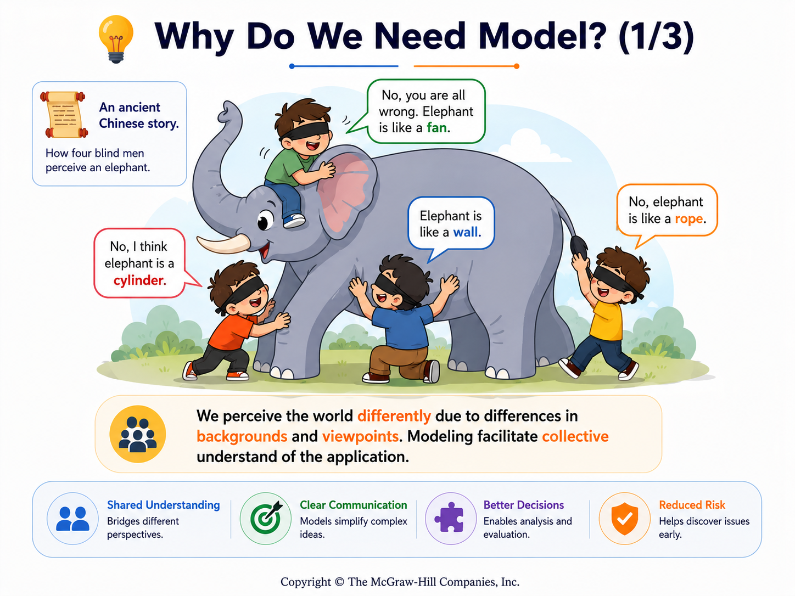
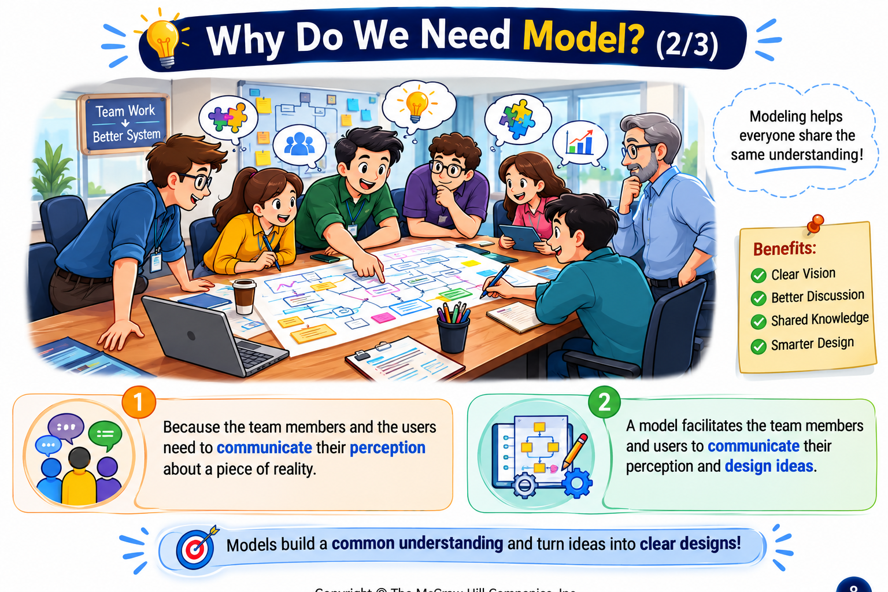
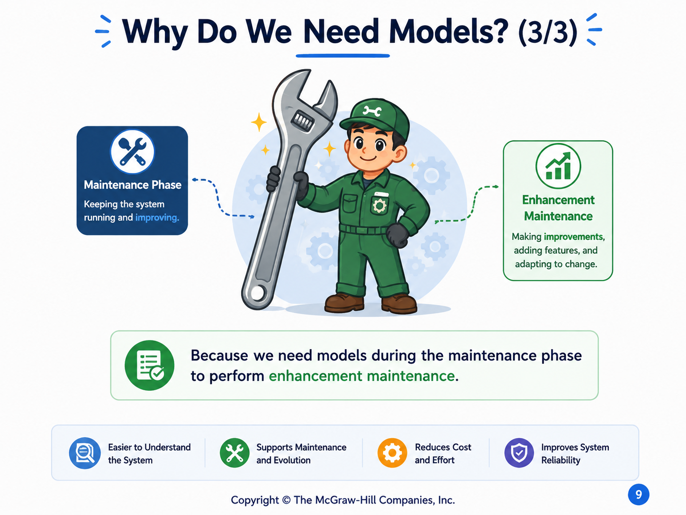

Why Models and Domain Modeling Matter
Teams need a shared representation because people perceive the same reality differently.
Explain why software teams model a domain before design and how a domain model creates shared understanding.
What is a model?
A model is a conceptual representation of something: a schematic description that captures known or inferred properties so the subject can be communicated and studied.
- People perceive the same reality differently because their backgrounds and viewpoints differ.
- Team members and users therefore need a shared representation for communicating their perceptions and design ideas.
- Models remain useful during enhancement maintenance because they preserve an inspectable view of the system and its domain.
One reality can produce different mental models

Different viewpointsBackground and role shape what each person notices.

Shared communicationA model gives users and developers something concrete to inspect together.

Long-term valueThe model supports understanding beyond initial development.
Domain modeling turns understanding into an explicit artifact
A process that helps the team understand the application and its domain and establish common understanding.
Software engineers work in different domains and come from different backgrounds, so they need domain knowledge and a shared perception.
Collect domain information, brainstorm and classify concepts, then visualize the knowledge using a UML class diagram.
A domain model defines application-domain concepts in terms of classes, attributes, and relationships. It helps analysts understand the domain, improves communication with team members and customers, and provides a basis for design, implementation, and maintenance.
For domain modeling, the UML class diagram represents domain concepts and relationships without showing operations. The goal is understanding the problem world, not designing software classes prematurely.